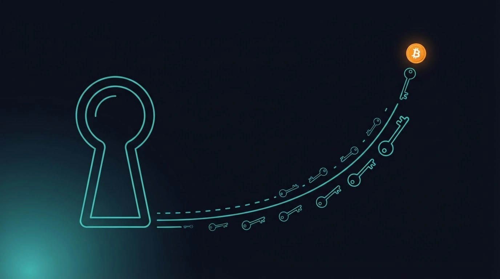
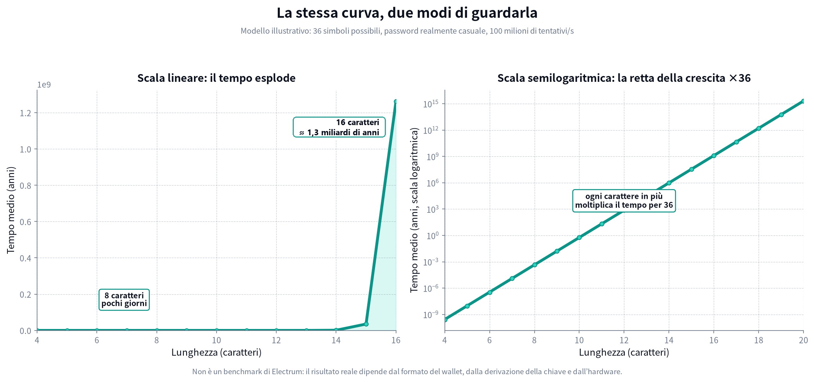

La risposta breve
Se qualcuno copia il file del tuo wallet Electrum, la password diventa una parte importante della tua sicurezza. Una password di otto caratteri può essere molto debole, soprattutto se è una parola comune, un nome, una data o una combinazione prevedibile.
Ma attenzione: non esiste un tempo universale — "un'ora", "un giorno" o "un anno" — valido per tutte le password di otto caratteri. Il tempo dipende da come è stata scelta la password, dal metodo di cifratura del wallet e dall'hardware usato per i tentativi.
La regola pratica è semplice: per proteggere un wallet Bitcoin, otto caratteri sono una soglia minima, non un buon obiettivo. Usa una password lunga, casuale e unica.
Che cosa protegge la password di Electrum?
Electrum può cifrare le informazioni sensibili del wallet, compresi seed e chiavi private. La password serve a rendere il file inutilizzabile per chi lo copia senza conoscere la password.
Questo protegge soprattutto il wallet quando è chiuso. Durante una sessione aperta, le informazioni necessarie devono essere disponibili nella memoria del computer: per questo una password forte non può compensare un computer già infetto o controllato da un malware.
La documentazione ufficiale di Electrum spiega inoltre che il seed e le chiavi private vengono cifrati e che la password è richiesta per aprire il wallet cifrato. Se dimentichi la password ma possiedi il seed, puoi ripristinare il wallet e scegliere una nuova password; se perdi sia la password sia il seed, recuperare i fondi può diventare impossibile. Electrum FAQ
Che cosa succede se qualcuno copia il file?
Immagina tre situazioni diverse:
- Il file è pubblico, ma il wallet è ben protetto. L'aggressore può tentare di indovinare la password offline, senza dover interagire con il tuo computer ogni volta.
- La password è una frase prevedibile. Il programma non prova solo combinazioni casuali: può provare parole, nomi, date e varianti comuni molto prima di arrivare al tentativo completamente casuale.
- Il computer è già compromesso mentre Electrum è aperto. In questo caso il problema non è più soltanto la password: malware o programmi di controllo remoto possono osservare ciò che accade sul dispositivo.
Per questo la sicurezza è fatta di più strati: password forte, seed conservato offline, sistema operativo aggiornato, attenzione ai programmi installati e, per somme importanti, hardware wallet o cold storage.
Perché la lunghezza cresce in modo esponenziale?
Supponiamo, solo per capire la matematica, che ogni carattere possa essere scelto tra 36 possibilità: 26 lettere minuscole e 10 cifre.
- 1 carattere: 36 combinazioni
- 2 caratteri: 36 × 36 = 36²
- 8 caratteri: 36⁸ = circa 2.800 miliardi di combinazioni
- 12 caratteri: 36¹² = circa 4,7 miliardi di miliardi di combinazioni
- 16 caratteri: 36¹⁶ = circa 8 milioni di miliardi di miliardi di combinazioni
Ogni carattere aggiunto moltiplica lo spazio di ricerca per 36. Non aggiunge semplicemente "un po' di sicurezza": lo rende molto più grande.

Importante
Questo grafico non è un benchmark di Electrum e non significa che un i9 esegua davvero 100 milioni di tentativi validi al secondo contro ogni file wallet. È un modo visuale per capire l'effetto della lunghezza.
Alcuni esempi concreti (tempi indicativi)
Per dare un'idea pratica, ecco alcune password di esempio e un ordine di grandezza del tempo necessario per scoprirle con un computer potente (per esempio un PC con Intel Core i9 a 10 core) e un buon programma di recupero password. Sono stime indicative, non misure esatte: servono a capire gli ordini di grandezza.
| Password di esempio | Perché è debole o forte | Tempo indicativo |
|---|---|---|
12345678 |
Sequenza banale, provata per prima | secondi |
password |
Parola comunissima | secondi |
marco2024 |
Nome + anno: schema tipico | minuti |
Torino!23 |
Parola + maiuscola + simbolo: schema prevedibile | minuti / ore |
k7m2v9pa |
8 caratteri casuali (minuscole + cifre) | ore / giorni |
K7!m2V9# |
8 caratteri casuali con simboli e maiuscole | giorni / settimane |
t4v8m2q9k7x3 |
12 caratteri casuali | anni |
T4!v8m2Q9#k7X3pL |
16 caratteri casuali | miliardi di anni |
Per dare un ordine di grandezza con il modello di prima (100 milioni
di tentativi al secondo): k7m2v9pa cadrebbe in circa
4 ore, t4v8m2q9k7x3 richiederebbe circa
750 anni e una password casuale di 16 caratteri circa
1,3 miliardi di anni. Cambia l'hardware e i numeri
cambiano, ma il salto tra una lunghezza e l'altra resta questo.
Due cose saltano all'occhio:
-
Le password "furbe" non funzionano. Mettere la
maiuscola all'inizio, l'anno alla fine o trasformare la
ain@sono trucchi che i programmi conoscono benissimo: li provano subito. - La lunghezza batte la fantasia. Una password di 16 caratteri generata a caso è più forte di una di 8 caratteri piena di simboli pensati a mano.
E l'intelligenza artificiale? Può rendere più intelligenti i tentativi — per esempio ordinando prima le password che gli esseri umani scelgono più spesso — ma non può saltare la matematica: contro una password lunga e generata davvero a caso, non ha scorciatoie.
Password casuale e password umana non sono la stessa cosa
Confrontiamo due password entrambe lunghe otto caratteri:
-
casa1984è lunga otto caratteri, ma contiene una parola comune e una data. È una scelta prevedibile. -
q7m2v9pasembra casuale. Se è stata generata davvero a caso e non riutilizzata, offre molta più resistenza.
Un programma moderno proverà prima le password che le persone
scelgono più spesso. Anche un sistema di intelligenza artificiale può
aiutare a ordinare i tentativi in base a schemi umani — nomi, anni,
sostituzioni come a → @, maiuscole
iniziali — ma l'IA non annulla la matematica. Una stringa lunga e
generata casualmente resta difficile perché non segue uno schema da
indovinare.
La password più lunga del mondo, se è
PasswordPasswordPassword, non è una buona password. La
casualità conta quanto la lunghezza; per un wallet, servono entrambe.
Quanta lunghezza scegliere?
Per un wallet Bitcoin non scegliere una password breve solo perché è più facile da ricordare. Una buona opzione è:
- almeno 16 caratteri casuali, generati da un password manager;
- oppure una passphrase di 4–6 parole scelte casualmente, non una frase famosa o personale;
- una password unica, mai usata per email, exchange, social o altri servizi;
- conservazione sicura della password, separata dal seed e non in un documento non cifrato.
Le linee guida NIST SP 800-63B Rev. 4 richiedono almeno 15 caratteri quando una password è l'unico fattore di autenticazione e raccomandano di consentire password molto lunghe. Non è una regola specifica per Electrum, ma è un riferimento utile per capire perché otto caratteri non dovrebbero essere il nostro traguardo. NIST SP 800-63B
La checklist finale di SAFE21
- Non usare nomi, date, parole del dizionario o password riciclate.
- Preferisci 16 o più caratteri casuali, oppure una passphrase di parole casuali.
- Non salvare seed e password nello stesso file o nello stesso posto.
- Tieni il seed offline e non fotografarlo.
- Aggiorna Electrum e il sistema operativo; scarica il software solo da fonti affidabili.
- Per somme importanti, valuta hardware wallet e cold storage.
- Se pensi che il computer sia stato compromesso, non cambiare soltanto la password: sposta i fondi in un wallet nuovo e sicuro, usando un dispositivo affidabile.
La lunghezza non è l'unico elemento della sicurezza, ma è quello più facile da capire e migliorare. Passare da otto a sedici caratteri casuali non raddoppia la protezione: può moltiplicare enormemente il numero di tentativi necessari.
Una password forte non deve essere memorabile per un aggressore. Deve essere impossibile da prevedere.
Una nota sui numeri di questo articolo
I dati, i tempi e i grafici che hai letto qui sono stime, non misure precise. Non sono benchmark di Electrum e non descrivono un attacco reale su un file specifico: il risultato effettivo cambia con il formato del wallet, la derivazione della chiave, il programma usato e l'hardware a disposizione.
Servono a un altro scopo, molto più utile: dare un'idea chiara di quanto conti la lunghezza di una password fatta di caratteri casuali. Quello è il punto che resta vero a prescindere dai numeri esatti — ogni carattere casuale in più moltiplica il lavoro necessario a indovinarla, e lo moltiplica molto in fretta.
Fonti citate:
- Documentazione Electrum (FAQ): docs.electrum.org
- NIST SP 800-63B Rev. 4: pages.nist.gov
Questo articolo ha finalità educative e non sostituisce una valutazione personalizzata della sicurezza del tuo wallet. SAFE21 aiuta a configurare Electrum e la self-custody senza prendere mai in custodia i tuoi fondi. Le transazioni Bitcoin sono irreversibili: prova sempre con piccoli importi prima di operare su somme importanti.